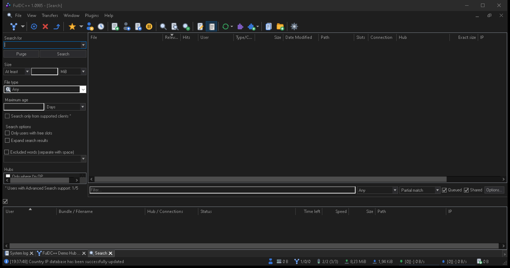

Searching
One search, every hub you are connected to.
A normal search
Open a search window with View → Search, Ctrl+S, or the toolbar button. Type what you are after and press Enter. The search goes out to every connected hub at once and results trickle back over the next few seconds — a direct connect search is not instant, and results arrive from each user separately.

Narrowing it down
File type
Any, audio, compressed, document, executable, picture, video, directory, or a TTH hash. Pick Directory when you want a whole release folder rather than loose files.
Size
At least / at most, in B, KiB, MiB or GiB. Good for filtering out samples and thumbnails.
Hubs
The panel listing your connected hubs — untick any you do not want to bother.
Match type
Whether your words must match part of the path, part of the name, or the name exactly.
You can also exclude words, and filter the results already on screen with the filter box without re-running the search.
Reading the results
Results are grouped so that one file found on many users is a single row you can expand. The columns tell you the file name, size, the user offering it, their hub, connection and free slots. Rows are colour-coded against what you already have: files already in your share or already in the queue are marked as duplicates, so you do not download the same thing twice.
Right-click a result to Download, Download to… a chosen folder, Download whole directory, Browse file list at that location, or Search for alternates by hash — that last one finds every other copy of the exact same file, which is the fastest way to add sources to a slow download.
Search types
The file-type list is editable. Settings → Advanced → Search
types lets you change which extensions count as audio or video, and add your own named types
— for example a “subtitles” type matching .srt and .sub.
Custom types appear in the drop-down of every search window afterwards.
Auto search
View → Auto search keeps looking for things so you do not have to. An auto-search item is a search string plus rules, and FulDC++ re-runs it on a schedule and queues what it finds.
Each item can carry:
- A search string, with regular-expression or wildcard matching.
- A target folder and a priority for whatever it queues.
- Size and type limits, so a 40 MB sample never matches.
- Search times — the days and hours it is allowed to run, which keeps overnight jobs off your daytime bandwidth.
- An expiry date, or removal once it finds something.
Items can be sorted into groups and given priorities relative to each other. This is the feature that turns FulDC++ into something that fills a folder while you are asleep.
ADL search
View → ADL Search is a different idea: instead of searching hubs, ADL rules run automatically against every file list you browse. A rule that matches flags the file into a virtual folder at the top of that user's list, and can queue it outright.
Each rule has a pattern (plain text, wildcard or regex), which part of the entry to match against — file name, directory name or full path — and optional size limits. Use it for the things you always want: a favourite artist, a series you follow, or a file type you collect.
Search spy
View → Search spy shows what other people are searching for that reaches you. It is a good way to see what a hub is actually about, and to notice that a release you have is in demand.
FulDC++ only: the spy in FulDC++ is considerably more detailed than the upstream one. It shows the seeker and their IP, the hub, how many results you returned, the search type, and the size, extension and exclusion terms that came with the query. There is a filter bar, a Pause button for when it scrolls too fast, multi-select, per-column copy and a column chooser.